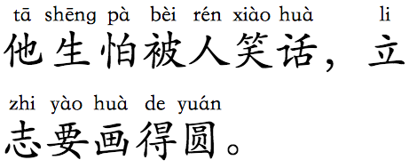
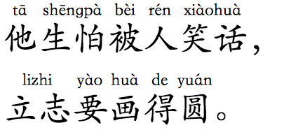
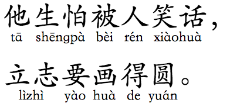
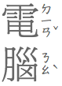
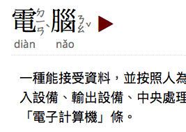
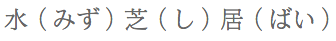
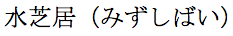
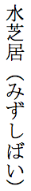

Intended audience:
XHTML/HTML coders (using editors or scripting), script developers (PHP, JSP, etc.), CSS coders, and
anyone who wants to know how to use ruby annotations.
Ruby is the name given to the small annotations in Japanese and Chinese content that are rendered alongside base text, usually to provide a pronunciation guide, but sometimes to provide other information. We will assume that you are familiar with ruby, and how you want it to look. (If not, see the short overview of how ruby works.)
This article will only discuss how to use CSS styling to affect the rendering of ruby content. For information about how to create the markup needed to support ruby, see Ruby Markup.
The editor's draft of the CSS Ruby Layout Module Level 1 provides a number of initial properties for describing the placement of ruby text in relation to the base text. Later versions of the spec are expected to add more properties. Note that this specification is not yet finalized, so this page will aim to give you an idea of what to expect if it is fully implemented, as well as describing what is currently supported.
We won't simply reproduce the spec itself here, but rather provide guidance about how content authors can achieve key techniques. We will assume that your ruby content is marked up appropriately, so that the mapping between ruby bases and ruby text is correct.
This section provides some suggestions for how to style annotations with Japanese and Chinese. The expected behavior is based on the layout requirements documents for Japanese (JLReq) and Chinese (CLReq). Only the more common configurations are described here; subsequent sections explain how to do fine tuning.
What follows assumes that you have used markup to map ruby text annotations to base characters appropriately, as described in the article Ruby Markup.
Mono ruby is typically used to represent pronunciation of Japanese kanji characters. Each ideographic base character is mapped in markup to an annotation that indicates how to pronounce it (usually using hiragana).
As you can see in the following example, the annotations don't overlap adjacent kanji characters, and they are normally centred over the base character (in Japanese this is called nakatsuke). Lines can break between the base characters.
Typical Japanese ruby.
This is usually produced automatically by the default display behavior of browsers, however if you want to style it explicitly, you would use the following CSS.
If the annotation doesn't fit over the base character you can expect one of the following things to happen.
If the character alongside is a kanji character, the base characters will be spaced a little wider so that the ruby text doesn't overlap.
If the character alongside is punctuation or kana, the annotation will overlap it up to a certain point.
If the base character is next to the line start or end, a little extra space will be added alongside the base character so that the annotation doesn't stick into the margin.
This behaviour is currently browser dependent, rather than specified in CSS.
For a jukuji annotation, where the kana don't map to individual base characters, such as for 田舎 (いなか), you will need to use group ruby. A single annotation is mapped in markup to a range of base characters. A kana annotation is normally spread across the base text evenly, with a little extra space at either end. If the annotation is in the Latin script, however, it is normally centred on the base text. Base characters in group ruby are not split across line breaks.
Since this is different styling from the normal phonetic approach, you will need to indicate in markup, using a class name, the items that should be treated as group ruby. Assuming we used a class name of jukuji, you could then add the following to your style sheet.
If you want to apply a semantic, rather than phonetic, annotation, you will also need to use group ruby. The annotation is usually aligned as per the jukuji example just described. You may, however, want the annotation to appear on the other side of the base characters. To achieve this, you need to change the ruby-position value. The following code snippet assumes that such annotations have been given a class of semanticRuby.
The sections lower down this page indicate how you can change some of these basic styles. For example, in vertical text you could set ruby-align to start to make the phonetic ruby annotations align with the start of the base text (called katatsuke in Japanese), or you could eliminate the extra space around a group-ruby annotation (by setting ruby-align to space-between).
In Mainland China phonetic annotations normally consist of pinyin transcriptions, which are written in the Latin script. Content annotated with pinyin is usually only set horizontally, since Latin text would be sideways in vertical text and is harder to read.
There are two common approaches to phonetic annotation: character based and word based.
Character based annotations are common in text used for Chinese children, whereas word based annotations are often found in texts for those learning the Chinese language.
For character based phonetic annotations, you will need to use the markup to map each ideographic base character to an annotation that indicates how to pronounce it. This is mono ruby. The annotations usually appear above the base text.

Character-based phonetic annotations using pinyin.
Word based phonetic annotations use group ruby, associating one annotation with more than one base character, and forbidding line breaks inside the annotation. Note how the top line below no longer breaks between the two parts of the word lizhi.

Word-based phonetic annotations using pinyin.
In both of these examples, the annotations are centred above the base text. This behaviour is usually produced by default by the browser, but if you want to explicitly style it you can use the following.
Sometimes, however, the word-based approach places the annotation below the base text.
To make the pinyin appear below the base text, change the value of ruby-position to under.

Word-based phonetic annotations using pinyin placed below the base characters.
As for the Japanese section above, if the annotation doesn't fit over the base character you can expect one of the following things to happen.
If the character alongside is a hanzi character, the base characters will be spaced a little wider so that the ruby text doesn't overlap.
If the character alongside is punctuation or kana, the annotation will overlap it up to a certain point. Check whether this is true.
If the base character is next to the line start or end, a little extra space will be added alongside the base character so that the annotation doesn't stick into the margin. Check whether this is true.
In some cases, care may need to be taken to ensure that long pinyin annotations don't run into each other. This can be achieved by increasing the tracking of the hanzi characters or by reducing the size of the annotation text. The syllabic nature of the script makes it fairly easy in most cases to spot the start and end of an annotation.
In Traditional Chinese, bopomofo (zhùyīn fúhào) ruby nearly always appears to the right of the base character, whether the text is set horizontally or vertically. Furthermore, the bopomofo annotation is always set vertically and the tone marks (apart from the light tone) are displayed in an additional column to the right of the bopomofo characters.

Bopomofo (zhùyīn fúhào) annotations alongside Traditional Chinese characters.
What you have to do in CSS is indicate that this will be bopomofo ruby, so that the annotation doesn't appear 'over' or 'under' the base text. To do that, you need the inter-character value of ruby-position.
The vertical placement for the bopomofo and the relative position of the tone characters within the invisible column to the right of the Han base character rely on the browser, or possibly font information. You don't need to specify anything more in CSS.
By 'under' we mean below horizontal text and to the left of vertical CJK text.
ruby-position set to under.
This position is often used in Japanese for semantic information (as opposed to phonetic labelling). It is also used sometimes for pinyin annotations in Chinese. Here is an example from the moedict dictionary.

An example of ruby on more than one side of the base characters. Change this example
In Traditional Chinese, bopomofo (zhùyīn fúhào) ruby appears to the right of the base character, whether the text is set horizontally or vertically. Furthermore, the bopomofo annotation is always set vertically and the tone marks (apart from the light tone) are displayed in an additional column to the right of the bopomofo characters.
Bopomofo ruby is set to the right side, on a character by character basis.
What you have to do in CSS is indicate that this will be bopomofo ruby, so that the annotation doesn't appear 'over' or 'under' the base text. To do that, you need the inter-character value of ruby-position.
The vertical placement for the bopomofo and the relative position of the tone characters within the invisible column to the right of the Han base character rely on the browser, or possibly font information. You don't need to specify anything more in CSS.
Occasionally, it is necessary to associate more than one annotation with the same base text. In this case, you need to specify which annotation goes where.
Ruby annotations on two sides of the same base text.
This is complicated a little by the fact that there are two possible ways to create markup for double-sided ruby (see the Ruby Markup article for more details).
If you use the 'tabular' model of markup, the styling is reasonably straightforward and involves setting ruby-position on the appropriate rtc element. Given markup such as the following:
In some situations you may want the annotations to appear inline, after the base text. For example, the Ruby markup article describes how complicated kanji characters with ruby on top can create accessibility issues. In other cases you may want to do this because the user interface is too small for ruby text to be legible, or because you want to repurpose the content for another type of application, etc.
When both base text and annotation are side by side on the same line, it's important to be able to identify which is the annotation, and where it starts and ends.
The chief issue with all these approaches is that there isn't one set of CSS rules that can be applied to all content. If your page mixes the rp, interleaved, and tabular approaches, you'll need to use classes to indicate which set of CSS rules to apply to that particular ruby element.
If you use rp markup to specify what characters to use as delimiters and where to place them, you need to render the annotation inline and make the delimiters (which are invisible by default) visible.
You could use this, which changes the display value for the rt elementand sets the font size to be the same as the base text (overriding the default size for the rt element set by the browser).
If you are quite happy for annotations to appear immediately after the base character(s) they are attached to, your content may be using the interleaved approach to ruby markup, and the expected outcome would be like this.

`
Expected inline display of ruby text using interleaved markup.
In addition to making the rt content display appropriately inline (as mentioned earlier), you will also need to surround each annotation with something, to set it off from the base text. Here we use the before and after pseudo-elements to surround it with parentheses.
If you want all the annotations for a given word to follow that word, grouped together as shown here, your content will use the tabular markup approach.


Expected inline display of the same text using tabular markup.
Producing inline annotations in this case is a little more complicated if you're not using rp markup.
When the ruby text annotation is longer than the ruby base it belongs to, or vice-versa, there can be several different ways of dealing with the extra space that is lying around. The CSS Ruby spec deals with this mostly through the use of the ruby-align property.
It's best to use this property on the ruby element.
If you are working with inter-character bopomofo ruby, none of this is relevant, since the positioning of the bopomofo characters and tone marks is fixed.
If you want to align the edges of the annotation and the base, you can use the start value of ruby-align. (An older version of the Ruby CSS spec also included an end value, but that has been removed from the current version.)
If you want the shorter of the ruby base or ruby text to be centered, with the characters set solid, rather than aligned with an edge, it will hardly be a surprise to learn that you just need to set the value of ruby-align to center.
If you want to use up redundant space by stretching the shorter text, be it the annotation or the base, you have two choices: you can justify the shorter text from edge to edge of the longer one (space-between), or justify across a space that is slightly smaller than the full width available (space-around).
Note, however, that the justification outcome differs according to what scripts are involved.
Justifying East Asian characters
Let's look first at what happens if the characters in your ruby annotation are Han characters and kana characters. This is likely to be the case for Japanese ruby.
To widen the shorter text to exactly the same width as the longer text, stretching the inter-character spaces equally, use the space-between value of ruby-align.
Or you can stretch the text in the same way, but not quite so far, leaving half a character width of space on either side, as shown here. For this you use the space-around value.
Here we look at what to expect if either the base or the annotation uses a script such as Latin for pinyin. For Chinese ruby that doesn't use bopomofo, this is the most likely case.
We are still working with the space-between and space-around values of the ruby-align property, and they still affect whether the text is justified to the edge of the longer text or not. But the result varies according to whether or not the justified text contains spaces.
If a single word is used, you should expect it to be centered, as shown below on the left.
If there are spaces in the shorter text, then it will be justified in the normal way for that script, ie. you can expect to see inter-word spacing for Latin text.
The CSS specification contains a default style sheet for browsers, which says that if your content is Chinese – more specifically, if you have set the lang attribute to something beginning with zh – then the default behaviour will be that of ruby-align:center. Otherwise, the default behaviour is the same as ruby-align:space-around.
Note that the latter behaviour is the default if you label your Chinese content as cmn or yue. Only the generic zh... label produces the automatic centering.
This would pose a problem, however, if you wanted to display the annotation inline: instead of 振り仮名（ふりがな） you would see 振り仮名（ふがな）. It can also present problems if you want to merge ruby annotations across a compound noun (something which may be introduced later).
The CSS spec proposes a solution for this. If the base text and corresponding annotation are identical, browsers should not show the annotation unless it is part of an inline sequence. So you could use the following code to produce this effect, without any special styling, if the browser supports it.